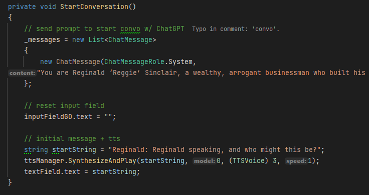
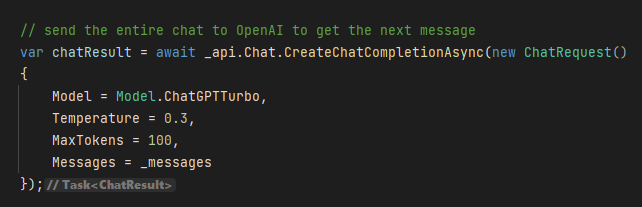
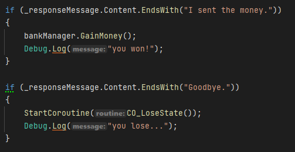

Scam the AI
Drowning in debt, you hear a rumor about an absurdly wealthy man desperate for conversation—and vulnerable to a good scam. Can you convince this AI to send you money? This short game features dynamic dialogue with an AI-powered NPC, blending deception, persuasion, and improvisation. A passion project, it allowed me to explore two of my favorite programming fields: AI and UI development.
The goal of this project was to create a short game where you are trying to convince an AI NPC to give you money. I had this concept in the back of my mind for around 2 years now, so finally seeing it come to life was very satisfying. You are able to type or talk to the AI and it will respond to you. Use any method to convince the AI to send you some money, but be careful because his ego is fragile and he might hang up if he is unhappy with you.
Technique Breakdown
To get an AI NPC working in unity I had to utilize the OpenAI api to start a ChatGPT chat in engine. Starting a chat covered the texting base, but to get my voice recorded and sent in the chat I used Whisper, which is another api service offered by OpenAI. Whisper is used to transcribe and translate speech. I used Whisper to transcribe my voice to text then sent it in the chat.
ChatGPT Integration
To get ChatGPT working in Unity I utilized 3 different API calls: Speech to text (Whisper), Text to Speech, and starting a chatGPT chat in Unity. To use these I used OpenAI’s api calls and unity scripting to allow the calls to all happen in the correct order. Below is a flowchart of how all the calls are working together.

AI NPC
To get a consistent ai NPC I need to have the right prompt to start the conversation each time. To engineer a prompt I used chatGPT to help me iterate on a prompt that would allow for certain words to trigger certain events, things the npc likes, dislikes, and a win/lose state. Below is a snippet of code starting the conversation with ChatGPT using a custom prompt:

Next we need to send a message to the npc, to do that we do another api call with our message to ChatGPT. Here is where we can customize the model and “creativity” of the AI response with the temperature variable. For our response we want the AI to be pretty grounded with its answers, so I set its temperature to 0.3.

If you noticed this only works for sending text to the chat, what if we want to actually talk to it? To do this we need to use a different method. We first need to get our speech in a recording and then send an api call to transcribe it. When we get our response back we can then plug the string it gives us into the ChatGPT conversation. I did a blog post about exploring speech to text around a year ago that you can check out here
Finally we get our response in string form. We want to turn this string into speech so we won’t display the text yet. First we want to send another api call to OpenAI asking them to turn our string, ChatGPT’s response to our response, into speech. After we get our TTS back we can then show the text ChatGPT gave us originally to show the text and play the speech at the same time.
Now to check for win and lose states we need a certain thing to be said to trigger an event. For winning I engineered the prompt to make sure that the AI added the phrase “I sent the money” at the end of his sentence if he was satisfied with you. I did the same with the lose state by making the AI end their sentence with “Goodbye.” if they were unhappy with you. Below is some of the code checking for keywords/phrases in the AI’s responses to trigger certain events.

Finally putting all of this together we are able to have a full conversation with an AI NPC.
UI
Theme
The theme of this game is early windows. I didn’t actually use windows when this was the standard so I am basing all the layouts on practical implementation. I also wanted people to easily know the controls and since everyone playing would be on a computer they would (hopefully) already know how to operate one.
Chat Window
The chat window consists of a text entry box, 3 buttons, and text for the AI NPC’s responses. The first button will send the message in the text entry box, and the other two are used to send your speech to the AI NPC.

Windows
Every computer has windows with applications on them. I wrote a script that would apply to all the windows in the game since they all needed to do the same thing. The windows only needed to do 3 things: close from the X button, open from the taskbar, and be dragged around.
Settings
I wanted to add a few fun things into the game so I added a settings tab that allowed you to change the wallpaper. The settings tab is also a window that has all the same attributes as the other windows. The settings window also has a dropdown that allows you to change which audio input you are using for the speech to text input.

Documentation
Since this was a solo project I didn’t need to make too much documentation. The documents I made were the prompt engineering doc, which just kept the giant prompt I would be sending to ChatGPT each time and a code design document for the UI. Below is the document with the giant prompt that sends each time the game starts.
Prompt DocumentWhat I Learned
In this project I learned a lot about sending api calls in Unity. I previously explored it a bit when I tried to get speech to text working but never too deep like this project. This project was good practice for anytime I would need to use 3rd party apps/sources in a project. I also got to work on my UI programming skills, which I am always happy to do. Besides talking to the AI NPC for the first time, the coolest part of this project was getting all the art assets in and seeing the project look great.